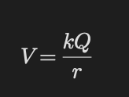
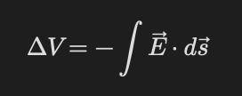
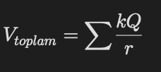

Elektrik ve Potansiyel
Temel Mantık
Elektrik alan yükleri hareket ettirebilir ve enerji değişimine neden olur.
Elektrik potansiyeli:
birim yük başına düşen potansiyel enerjidir.
Elektrik Potansiyeli
Noktasal yük için:

- V → potansiyel
- Q → kaynak yük
- r → uzaklık
Potansiyel skaler büyüklüktür.
Potansiyel Farkı
Elektrik alanın yaptığı işle ilişkilidir.

Elektrik alan:
yüksek potansiyelden düşük potansiyele doğrudur.
Eşpotansiyel Yüzeyler
- Aynı potansiyele sahip noktalardır.
- Elektrik alan eşpotansiyele diktir.
- Eşpotansiyel boyunca iş yapılmaz.
Potansiyel ve İş
Elektrik kuvvetinin yaptığı iş:W=-Delta U
Birden Fazla Yük
Potansiyeller cebirsel toplanır.

Soru Çözme Taktiği
- Potansiyelin skaler olduğunu unutma.
- İşaretlere dikkat et.
- Elektrik alan yönünü belirle.
- Gerekirse enerji korunumu kullan.
- Eşpotansiyel mantığını kullan.
Sık Yapılan Hatalar
- Potansiyel ile potansiyel enerjiyi karıştırmak
- Potansiyeli vektör sanmak
- Negatif işareti unutmak
- r yerine r² kullanmak
- Alan yönünü yanlış yorumlamak